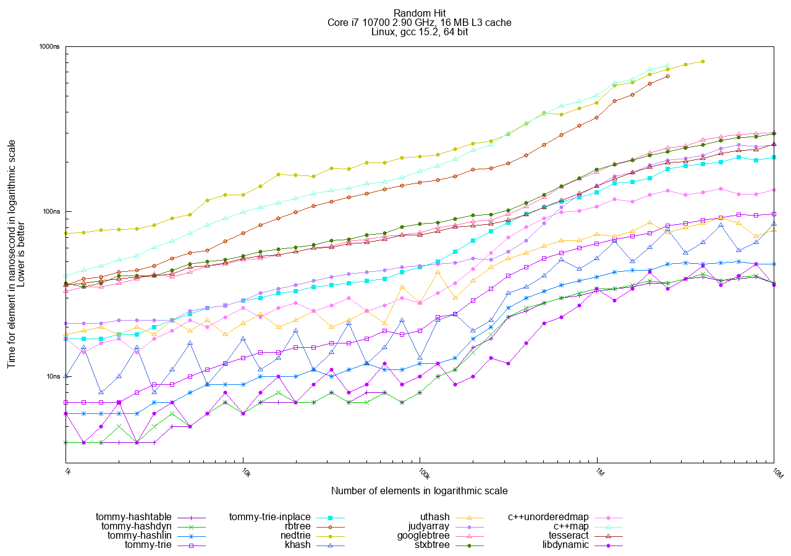
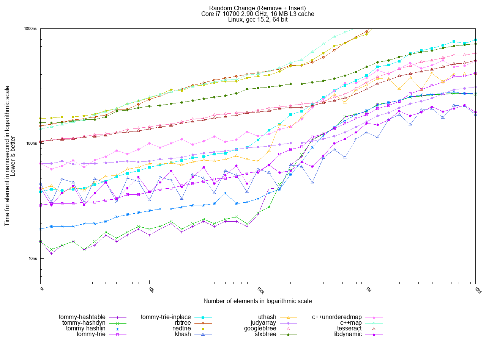
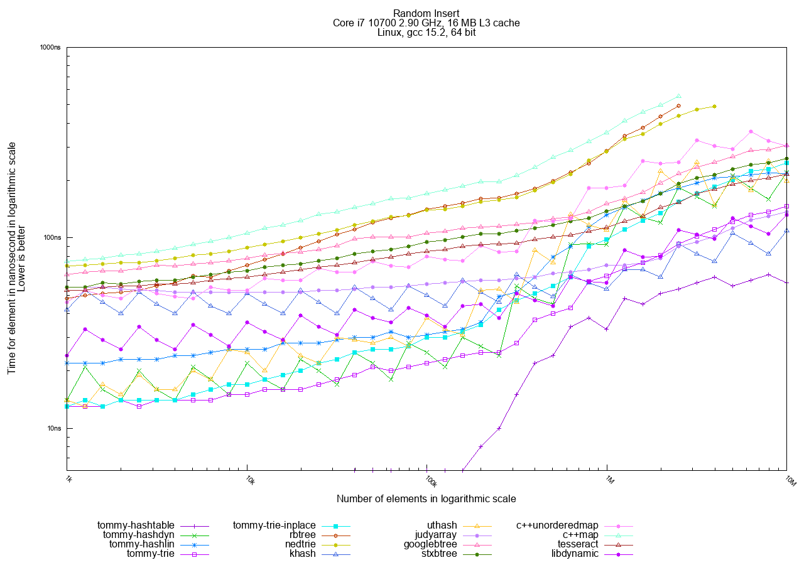
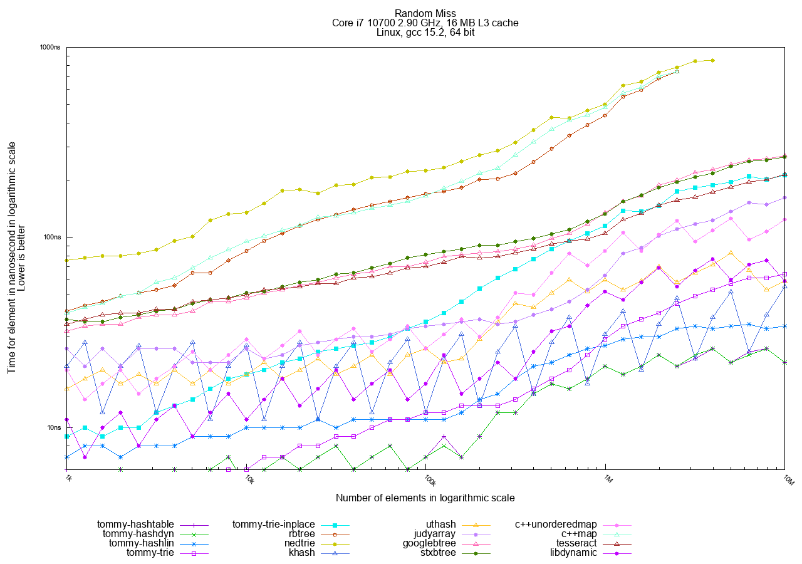
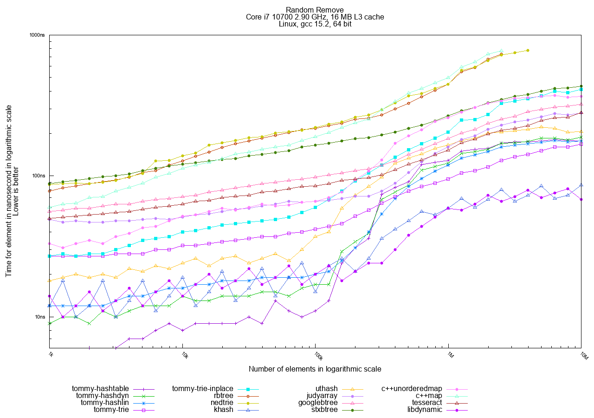
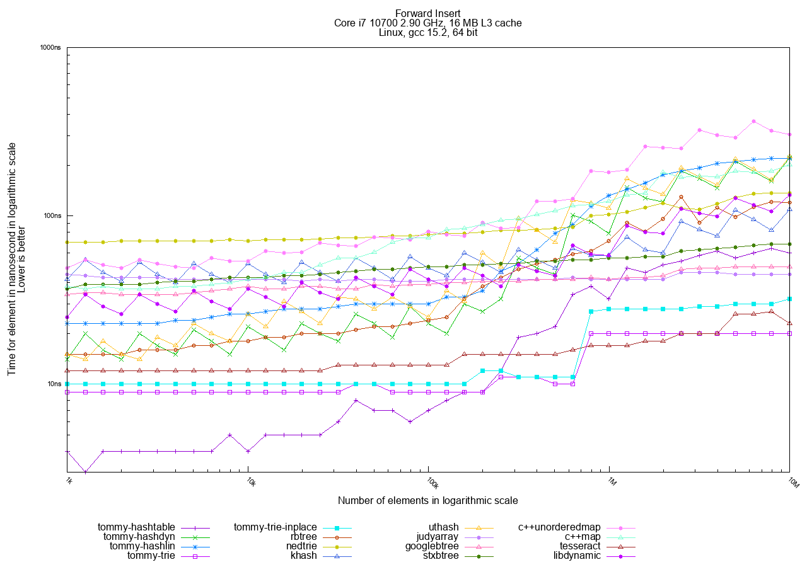
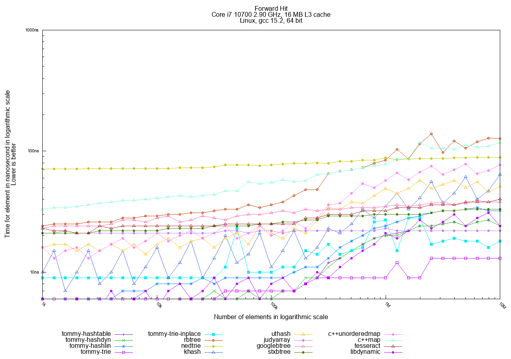
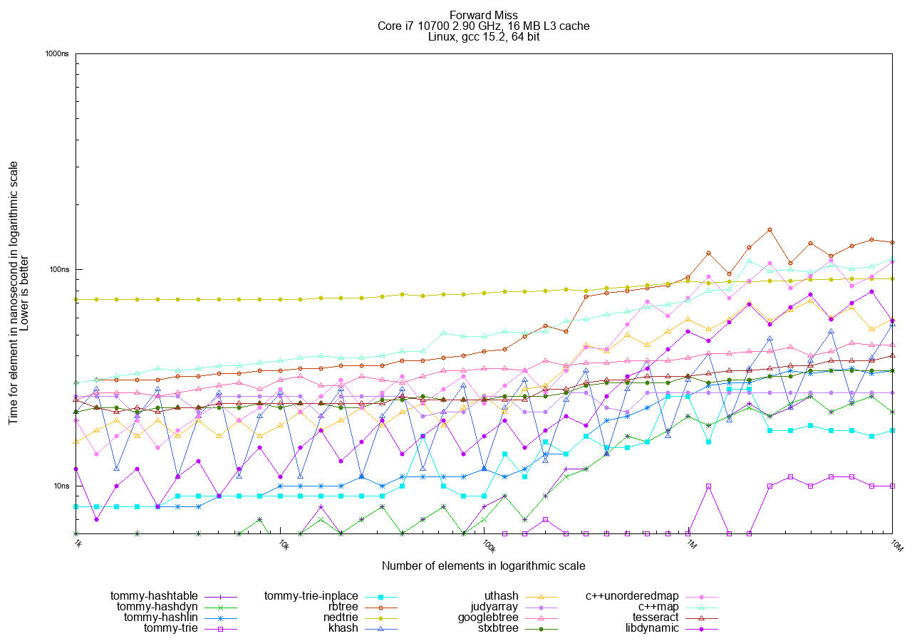
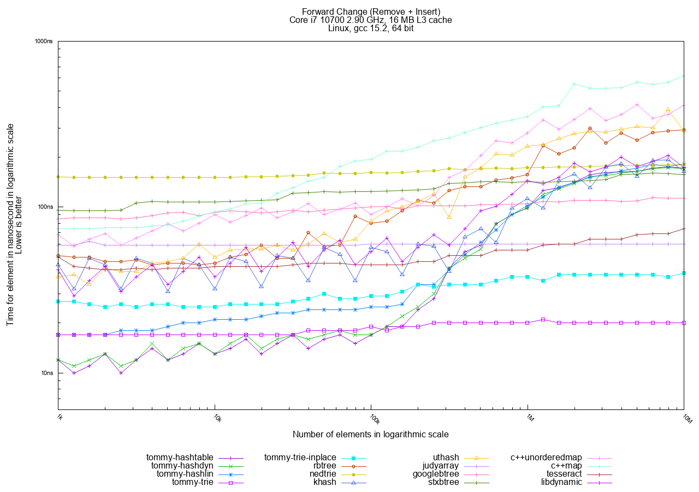
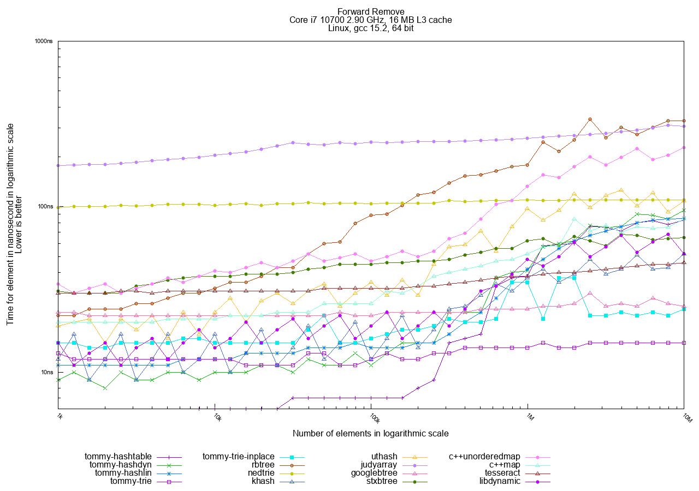

To help you understand TommyDS's performance, we conducted a thorough benchmark, comparing it against some of the best and most popular existing C and C++ data structure libraries in the conditions of a real-world application.
Here are the data structures included in the comparison:
- tommy_hashtable - Fixed-size chained hashtable.
- tommy_hashdyn - Dynamic chained hashtable.
- tommy_hashlin - Linear chained hashtable.
- tommy_trie - Trie optimized for cache usage.
- tommy_trie_inplace - Trie completely inplace.
- rbtree - Red-black tree by Jason Evans.
- nedtrie - Binary trie inplace by Niall Douglas.
- khash - Dynamic open addressing hashtable by Attractive Chaos.
- uthash - Dynamic chaining hashtable by Troy D. Hanson.
- judy - Burst trie (JudyL) by Doug Baskins.
- judyarray - Burst trie by Karl Malbrain.
- googledensehash - Dynamic open addressing hashtable by Craig Silverstein at Google (2.0.4).
- googlebtree - B-tree by Google.
- stxbtree - STX B-tree by Timo Bingmann.
- c++unordered_map - C++ STL unordered_map<> template.
- c++map - C++ STL map<> template.
- tesseract - Binary Search Tesseract by Gregorius van den Hoven.
- googlelibchash - LibCHash by Craig Silverstein at Google.
- libdynamic - Hash set by Fredrik Widlund.
- concurrencykit - Non-blocking hash set by Samy Al Bahra.
Note that googlelibchash, googledensehash and concurrencykit are generally not shown in the primary performance graphs because they exhibit numerous performance spikes across different data sizes. You can find specific details and relevant graphs about these in the Notes on Other Libraries section.
Understanding the Benchmark Methodology
The primary purpose of this benchmark is to measure the performance of storing and searching a collection of N pointers to distinct objects, indexed by an associated integer key.
This test methodology deliberately deviates from typical hash table comparisons where the entire object's data is copied and stored directly within the container.
Storing pointers is a more common requirement in real-world applications where the same object must be referenced by or included in multiple data structures (see Multi-Indexing: Searching Objects in Multiple Ways). Duplicating the object in such cases would be inefficient or incorrect. This difference is critical and explains why these performance metrics may differ from other general-purpose hash table comparisons.
To accurately simulate real-world usage where the application must retrieve and access the object's data, the search operation in this benchmark dereferences the stored pointers. This step typically necessitates an additional memory load, often resulting in a cache miss.
This overhead provides a relative performance advantage to intrusive containers (like the Tommy structures) where the required indexing metadata is stored directly within the user's object structure. For these designs, the cache miss incurred to access the object's data is the same one that retrieves the necessary indexing information, minimizing the "additional" cost.
The tests performed are:
- Insert: Measures the time taken to add all N objects, starting from an empty container.
- Change: Measures the time taken to Find, Remove, and immediately Reinsert an object with a new key, repeated for all N objects.
- Hit: Measures the time taken to successfully Find all N objects and then Dereference (access) them.
- Miss: Measures the time taken to attempt to find N objects that are not present in the container.
- Remove: Measures the time taken to Find and Remove all N objects.
Note that Change, Hit, and Miss tests are always performed with N objects already in the container, while Insert builds the container up, and Remove empties it. The objects are always dereferenced upon successful search and removal.
All objects are preallocated on the heap, and the time for memory allocation/deallocation itself is not included in the performance results.
Each object contains a unique integer key, a value field for consistency checks, and a 16-byte unused payload field, plus any required internal data structure links.
The keys used are unique and form a dense domain starting at 0x80000000 and consisting of N even numbers (e.g., 0x80000000, 0x80000002, ...).
- Using even numbers ensures there are missing keys (the odd numbers) within the domain range, which is crucial for realistic Miss and Change tests.
- Starting the key domain at 0x80000000 (instead of 0) prevents unfair advantages for data structures that might have special optimizations for keys near zero.
- For hashtables, keys are processed using the tommy_inthash_u32() function, which is designed to guarantee a uniform distribution and no hash collisions, providing an optimal scenario.
- For tries and trees, the keys are used directly (not hashed).
Tests are repeated using two key access modes:
- Random Mode: Keys are accessed in a completely random order. This represents the real-world worst case and generally favors hashtables because the key-hashing process already randomizes the access pattern.
- Forward Mode: Keys are accessed in order from the lowest to the highest. This naturally advantages tries and trees as they exploit the consecutive nature of the keys for cache locality.
Results Summary
The most significant tests depend on your data usage model, but if in doubt, focus on Random Hit and Random Change, as they represent the real-world worst-case random access scenario.
Random Hit Analysis

Observe the vertical split around the 100,000 element limit.
- Below 100k: The modern processor's cache can contain most of the data, resulting in extremely fast access for almost all structures.
- Above 100k: The number of cache misses becomes the dominant factor.
- Hashtables are nearly constant-time, showing almost no growth (O(1)).
- Trees (rbtree, nedtrie) grow logarithmically as log_2(N).
- Tommy Tries show better logarithmic growth: tommy_trie_inplace grows as log_4(N), and tommy_trie as log_8(N). The growth curve for Tommy Tries can be adjusted by configuring the number of branches per node.
Random Change Analysis

The Random Change graph confirms the 100,000 element cache limit split. It also highlights that hashtables are almost unbeatable for random-access combined remove and insert operations.
Full Random Order Results
In the Random access tests, hashtables are the clear winners, followed by tries, with traditional trees generally being the slowest.
The best choices in TommyDS for this access pattern are tommy_hashdyn and tommy_hashlin. tommy_hashlin is often preferred for being real-time friendly as it minimizes heap fragmentation.
|  |
|  |
|  |
Full Forward Order Access
In the Forward (sequential) access tests, tries are the fastest, followed by hashtables. Trees remain the slowest option.
The best choices in TommyDS here are tommy_trie and tommy_trie_inplace. tommy_trie_inplace is often preferred as it does not require a custom allocator.
Note that hashtables are also faster in Forward mode than in Random mode. This happens because the objects are allocated sequentially in memory, and accessing them in key order still results in better cache utilization overall.
|  |
|  |
|  |
|  |
|  |
Memory Usage
Here you can see how memory usage scales for the different data structures.
 |
Technical Details and Code Snippets
The benchmark was performed on a Core i7 10700 2.9 GHz running Linux. The compiler used was gcc 15.2.0 with the aggressive optimization flags "-O3 -march=native -flto -fpermissive".
Below is the pseudo-code for the benchmark setup, written here using the C++ unordered_map as an example implementation:
Insert benchmark
Change benchmark
Hit benchmark
Miss benchmark
Remove benchmark
Notes on Other Libraries
This section provides additional context on the tested libraries that are not part of TommyDS.
Google C libchash
This C implementation was excluded from the main graphs because it exhibits poor performance and significant spikes in the Change test for certain N values. See this performance graph for a visual illustration of the issue.
{kind=link}
Google C++ densehash
This C++ implementation exhibits erratic performance with significant spikes during the Change benchmark test, particularly in version 2.0.4. The older version 2.0.3 does not exhibit this behavior.
The performance degradation is likely caused by the revised reallocation strategy in 2.0.4, which enters a pathological case under the specific access patterns of this test.
This type of degeneration is characteristic of hash tables that use tombstone entries for deletion handling, where the accumulation of tombstones can lead to increased probe lengths and degraded performance.
Note that downgrading to version 2.0.3 avoids this specific issue but does not guarantee immunity from similar pathological cases under different workloads or access patterns.
See this performance graph for a visual illustration of the issue.
{kind=link}
Additionally, it does not automatically release memory upon deletion. To prevent an unfair advantage in the Remove test, we forced a periodic memory release by calling resize(0).
khash
This library does not release memory when elements are deleted, which can lead to an unfair performance advantage in the Remove test. It also does not provide a way to shrink its internal storage, so this advantage remains in the benchmark.
nedtrie
A crash bug was found when inserting a key with the value 0. The issue was reported to the author and the necessary fix has been implemented.
Judy
The Judy library (specifically JudyL) can sometimes exhibit unpredictable performance depending on the specific platform and input data size. See for instance this graph showing a big, reproducible performance spike at 50,000 elements.
{kind=link}
Concurrency Kit
The non-blocking hash set displays severe performance degradation and numerous spikes in the Change test for some data sizes.
This type of degeneration is characteristic of hash tables that use tombstone entries for deletion handling, where the accumulation of tombstones can lead to increased probe lengths and degraded performance.
See this performance graph for a visual illustration of the issue.
{kind=link}